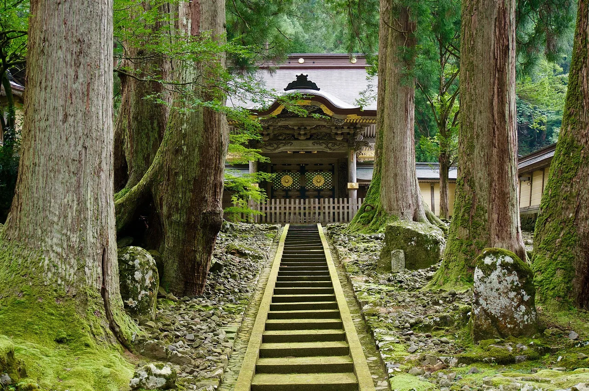

Fukui Travel Guide for Japanese Learners
Dinosaurs, dramatic cliffs, and a great Zen temple.

Quiet Fukui surprises visitors with Japan's top dinosaur museum, the meditative Eihei-ji temple, and the wave-cut cliffs of Tōjinbō.
History & background
Fukui (福井) is home to Eihei-ji (永平寺), founded in 1244 as the head temple of Sōtō Zen, and to so many dinosaur fossils that it hosts Japan's premier dinosaur museum.
What to see
- Fukui Prefectural Dinosaur Museum
- Eihei-ji Zen temple
- Tōjinbō cliffs
- Maruoka Castle
Hidden gems
- Ichijodani Asakura Clan Ruins showcase a beautifully reconstructed samurai town from the Sengoku period with traditional architecture and gardens.
- Katsuyama is a quiet mountain town famous for producing high-quality Japanese washi paper using centuries-old handmade techniques still practiced today.
- Mikuni Beach offers dramatic coastal scenery and fresh seafood markets where locals buy daily catches, rarely crowded with tourists.
Some links above are affiliate links. We may earn a commission at no extra cost to you. We only list services we'd use ourselves.
What to eat
Echizen crab in winter and sauce-katsudon.
Getting there & when to go
Getting there: Fukui is reachable via the Hokuriku Shinkansen (extended to Tsuruga in 2024).
Best time: November–March for Echizen crab; spring/autumn for temples and cliffs.
When to go — season by season
Winter (November–March) is Echizen (越前) snow-crab season. Spring and autumn suit Eihei-ji and the Tōjinbō (東尋坊) cliffs; summer is for the coast.
Local culture
Fukui's lacquerware tradition, especially Echizen-nuri, dates back 1,500 years. You'll notice locals using these glossy wooden bowls and trays in restaurants and shops; the deep crimson and black finishes are instantly recognizable and make popular souvenirs.
The prefecture's textile heritage runs deep—Fukui produces high-quality denim and silk fabrics. Many ryokan and shops display bolts of local cloth, and small weaving workshops welcome visitors to watch artisans work at traditional looms.
A suggested visit
Combine the Fukui Prefectural Dinosaur Museum with the meditative Eihei-ji temple, then watch the sunset from the basalt cliffs of Tōjinbō. Maruoka Castle (丸岡城) adds a genuine old keep.
Seasonal tip: Winter (December–February) brings heavy snow to inland areas and Eihei-ji temple; while roads remain passable, morning visits are best before weather worsens, and crab season peaks mid-December through January.
Local etiquette: At Eihei-ji temple, remain especially quiet in meditation halls and never photograph monks or altar areas; many visitors unknowingly disturb the serene atmosphere by speaking or taking flash photos.
Eihei-ji offers a glimpse of working Zen monastic life — visit respectfully and quietly.
Some links above are affiliate links. We may earn a commission at no extra cost to you. We only list services we'd use ourselves.
Common questions
Q. What's the best time to visit Fukui if I want to see everything?
A. November–March for Echizen crab, but spring and autumn offer the best temple and cliff scenery. Consider visiting twice or choosing November–early December to catch both seasonal highlights.
Q. How do I get to Fukui from Tokyo?
A. The Hokuriku Shinkansen reaches Tsuruga (extended in 2024), then regional trains to Fukui city. This is faster than driving and avoids mountain road fatigue before exploring Tōjinbō cliffs.
Q. Is Fukui worth visiting if I'm not interested in dinosaurs?
A. Yes. Eihei-ji temple and Tōjinbō's dramatic wave-cut cliffs are world-class, plus Echizen crab and sauce-katsudon are culinary destinations. Dinosaurs are one highlight, not the only one.